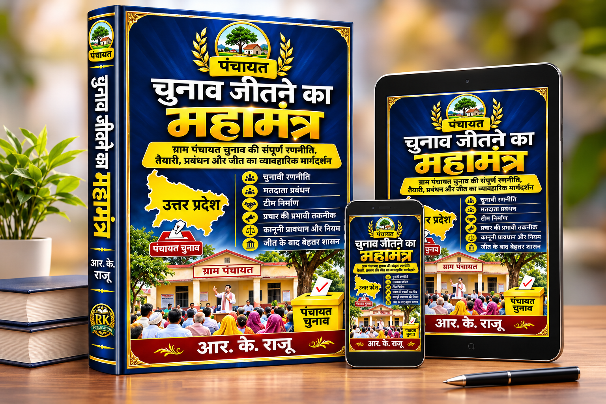

चुनाव जीतने का महामंत्र
चुनाव कैसे लड़ें, चुनाव की तैयारी कैसे करें और चुनावी रणनीति कैसे बनाएं? इन विषयों को समझने के लिए एक उपयोगी हिंदी मार्गदर्शिका।
पुस्तक की जानकारी देखेंपुस्तक का परिचय एवं मूल्य

चुनाव जीतने का महामंत्र
प्रकाशक: आर. के. पब्लिकेशन्स
उत्तर प्रदेश के पंचायत चुनाव और स्थानीय नेतृत्व को ध्यान में रखकर तैयार हिंदी पुस्तक।
मूल्य: ₹199
₹149
आपकी बचत: ₹50 (25.13% छूट)
संस्करण: डिजिटल पुस्तक (PDF)
पुस्तक खरीदने के लिए संपर्क करेंपुस्तक में शामिल प्रमुख विषय
चुनावी तैयारी
चुनाव लड़ने से पहले की तैयारी और योजना की समझ।
जनसंपर्क
जनता से संवाद और जनविश्वास बनाने की जानकारी।
चुनावी रणनीति
क्षेत्रीय विश्लेषण, टीम और संसाधन प्रबंधन की जानकारी।
पंचायत चुनाव की बुनियादी समझ
पंचायत चुनाव की व्यवस्था और उसकी बुनियादी जानकारी।
ग्राम सभा और ग्रामीण जनता से संवाद
ग्राम सभा की भूमिका और ग्रामीण जनता से संवाद की जानकारी।
प्रतिस्पर्धी और चुनौतियाँ
चुनाव में प्रतिस्पर्धी और सामने आने वाली चुनौतियों की समझ।
यह पुस्तक किसके लिए उपयोगी है?
यह पुस्तक पंचायत चुनाव, स्थानीय नेतृत्व, जनसंपर्क और चुनावी तैयारी से जुड़े विषयों को समझने के इच्छुक पाठकों के लिए तैयार की गई है।
इसमें उत्तर प्रदेश के पंचायत चुनाव से संबंधित विषयों पर विशेष ध्यान दिया गया है।
चुनाव कैसे जीतें और चुनाव की तैयारी कैसे करें?
चुनाव कैसे जीतें, चुनाव जीतने के तरीके क्या हैं, चुनाव की तैयारी कैसे करें और चुनावी रणनीति कैसे बनाएं — ये ऐसे विषय हैं जिनकी जानकारी चुनाव लड़ने की योजना बनाने वाले लोगों के लिए उपयोगी हो सकती है।
ग्राम प्रधान का चुनाव कैसे जीतें, पंचायत चुनाव कैसे लड़ें, चुनाव में जनसंपर्क कैसे करें और स्थानीय नेतृत्व की जिम्मेदारियों को कैसे समझें — इनसे जुड़े विषयों पर जानकारी के लिए इस पुस्तक का परिचय देखें।
यह पुस्तक उत्तर प्रदेश के पंचायत चुनाव और स्थानीय नेतृत्व को ध्यान में रखकर तैयार की गई है।
पुस्तक खरीदने एवं जानकारी के लिए
पुस्तक की खरीद, भुगतान और डिजिटल PDF प्राप्त करने की जानकारी के लिए WhatsApp पर संपर्क करें।
WhatsApp: 7392009310
WhatsApp पर पुस्तक खरीदने के लिए संपर्क करेंऑनलाइन भुगतान और स्वचालित डिजिटल डिलीवरी की सुविधा शुरू होने पर इसी पेज पर जानकारी दी जाएगी।